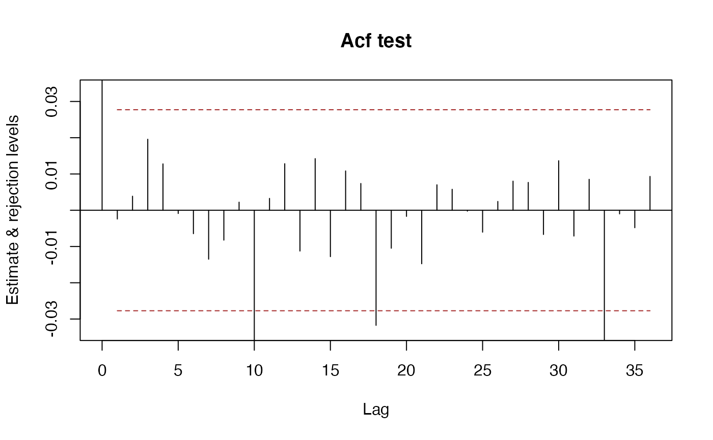
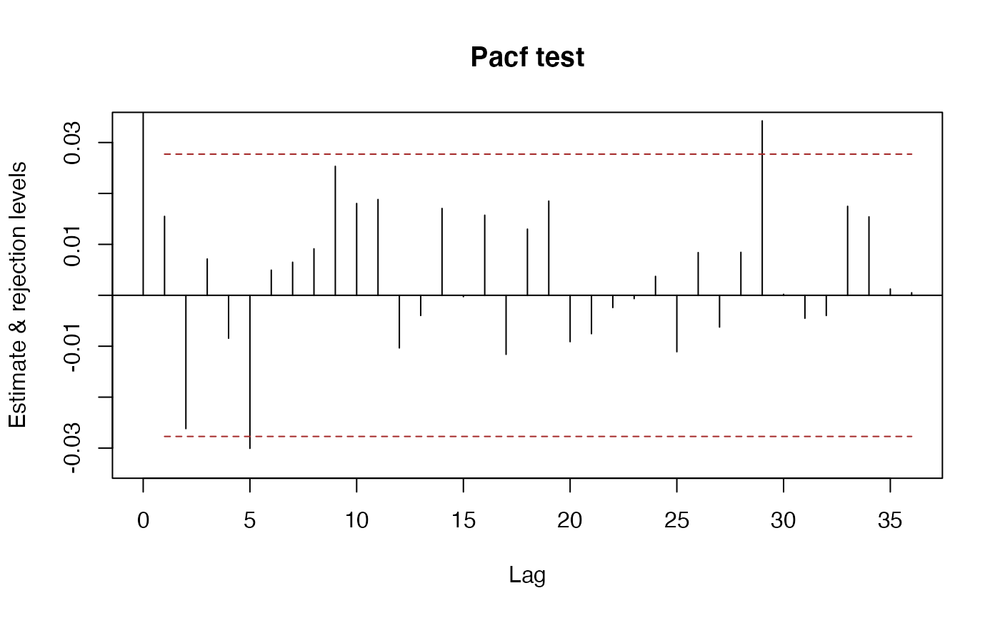
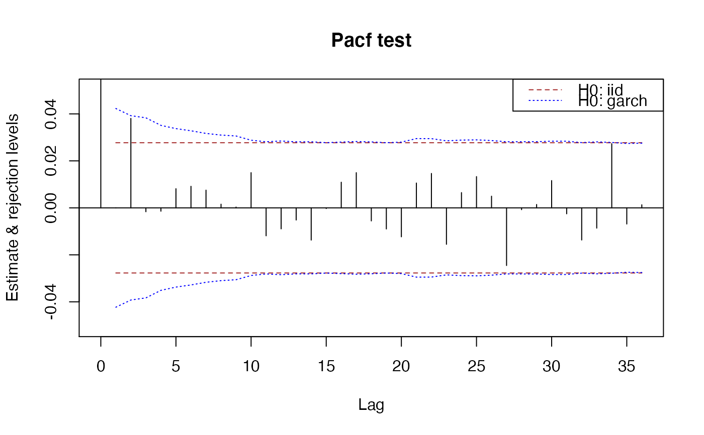

sarima-package.RdFunctions, classes and methods for time series modelling with ARIMA and related models. The aim of the package is to provide consistent interface for the user. For example, a single function autocorrelations() computes various kinds of theoretical and sample autocorrelations. This is work in progress, see the documentation and vignettes for the current functionality. Function sarima() fits extended multiplicative seasonal ARIMA models with trends, exogenous variables and arbitrary roots on the unit circle, which can be fixed or estimated.
There is a large number of packages for time series modelling. They provide a huge number of functions, often with similar or overlapping functionality and different argument conventions. One of the aims of package sarima is to provide consistent interface to some frequently used functionality.
In package sarima a consistent naming scheme is used as much as possible. Names of functions start with a lowercase letter and consist of whole words, acronyms or commonly used abbreviations. In multiword names, the second and subsequent words start with capital letters (camelCase). Only the first letter in acronyms is capitalised, e.g. Arma stands for ARMA. Formal (S4) classes follow the same rules but the first letter of the first word is capitalised, as well.
For example, the functions that compute autocorrelations,
autocovariances, partial autocorrelations are called
autocorrelations, autocovariances, and
partialAutocorrelations, respectively. Moreover, they recognise
from their argument(s) what exactly is needed. If they are given times
series, they compute sample autocorrelations, etc; if they are given
model specifications, they compute the corresponding theoretical
properties.
This is work in progress, see also the vignette(s).
Georgi N. Boshnakov [aut, cre], Jamie Halliday [aut]
Maintainer: Georgi N. Boshnakov <georgi.boshnakov@manchester.ac.uk>
Boshnakov GN (1996). “Bartlett's formulae---closed forms and recurrent equations.” Ann. Inst. Statist. Math., 48(1), 49--59. ISSN 0020-3157, doi: 10.1007/BF00049288 .
Brockwell PJ, Davis RA (1991). Time series: theory and methods. 2nd ed.. Springer Series in Statistics. Berlin etc.: Springer-Verlag..
Francq C, Zakoian J (2010). GARCH models: structure, statistical inference and financial applications. John Wiley & Sons. ISBN 978-0-470-68391-0.
Li WK (2004). Diagnostic checks in time series. Chapman & Hall/CRC Press.
McLeod AI, Yu H, Krougly Z (2007). “Algorithms for Linear Time Series Analysis: With R Package.” Journal of Statistical Software, 23(5). https://www.jstatsoft.org/article/view/v023i05.
## simulate a white noise ts (model from Francq & Zakoian) n <- 5000 x <- sarima:::rgarch1p1(n, alpha = 0.3, beta = 0.55, omega = 1, n.skip = 100) ## acf and pacf ( x.acf <- autocorrelations(x) )#> An object of class "SampleAutocorrelations" #> Lag_0 Lag_1 Lag_2 Lag_3 Lag_4 #> 1.000000e+00 1.596516e-05 3.808616e-02 -1.649206e-03 2.717910e-05 #> Lag_5 Lag_6 Lag_7 Lag_8 Lag_9 #> 8.013549e-03 9.107412e-03 8.148346e-03 2.228568e-03 8.893431e-04 #> Lag_10 Lag_11 Lag_12 Lag_13 Lag_14 #> 1.512348e-02 -1.170716e-02 -7.571810e-03 -5.950784e-03 -1.419321e-02 #> Lag_15 Lag_16 Lag_17 Lag_18 Lag_19 #> -3.835689e-04 9.972987e-03 1.487220e-02 -5.103151e-03 -8.331924e-03 #> Lag_20 Lag_21 Lag_22 Lag_23 Lag_24 #> -1.293415e-02 9.426683e-03 1.392478e-02 -1.429272e-02 7.360345e-03 #> Lag_25 Lag_26 Lag_27 Lag_28 Lag_29 #> 1.207846e-02 5.889272e-03 -2.292122e-02 -7.388854e-04 -8.841369e-04 #> Lag_30 Lag_31 Lag_32 Lag_33 Lag_34 #> 1.115600e-02 -1.667324e-03 -1.207643e-02 -9.358123e-03 2.652280e-02 #> Lag_35 Lag_36 #> -7.669487e-03 2.625645e-03 #> Slot n: #> [1] 5000 #> Slot varnames: <not set> #> Slot objectname: x#> An object of class "SamplePartialAutocorrelations" #> Lag_0 Lag_1 Lag_2 Lag_3 Lag_4 #> 1.000000e+00 1.596516e-05 3.808616e-02 -1.652796e-03 -1.425294e-03 #> Lag_5 Lag_6 Lag_7 Lag_8 Lag_9 #> 8.151278e-03 9.170566e-03 7.541042e-03 1.563694e-03 3.390532e-04 #> Lag_10 Lag_11 Lag_12 Lag_13 Lag_14 #> 1.498508e-02 -1.189787e-02 -8.936305e-03 -5.173923e-03 -1.371453e-02 #> Lag_15 Lag_16 Lag_17 Lag_18 Lag_19 #> -2.959054e-04 1.091681e-02 1.497422e-02 -5.559562e-03 -8.988260e-03 #> Lag_20 Lag_21 Lag_22 Lag_23 Lag_24 #> -1.232221e-02 1.056575e-02 1.463738e-02 -1.550598e-02 6.491740e-03 #> Lag_25 Lag_26 Lag_27 Lag_28 Lag_29 #> 1.330496e-02 4.962099e-03 -2.453493e-02 -7.696727e-04 1.426455e-03 #> Lag_30 Lag_31 Lag_32 Lag_33 Lag_34 #> 1.160205e-02 -2.532021e-03 -1.368225e-02 -8.624913e-03 2.730457e-02 #> Lag_35 Lag_36 #> -6.873443e-03 1.308651e-03 #> Slot n: #> [1] 5000 #> Slot varnames: <not set> #> Slot objectname: x## portmanteau test for iid, by default gives also ci's for the acf under H0 x.iid <- whiteNoiseTest(x.acf, h0 = "iid", nlags = c(5,10,20), x = x, method = "LiMcLeod") x.iid#> $test #> ChiSq DF pvalue #> [1,] 7.590469 5 0.1802969 #> [2,] 9.517556 10 0.4837878 #> [3,] 14.622527 20 0.7975840 #> attr(,"method") #> [1] "LiMcLeod" #> #> $ci #> int #> [1,] -0.02771808 0.02771808 #> [2,] -0.02771808 0.02771808 #> [3,] -0.02771808 0.02771808 #> [4,] -0.02771808 0.02771808 #> [5,] -0.02771808 0.02771808 #> [6,] -0.02771808 0.02771808 #> [7,] -0.02771808 0.02771808 #> [8,] -0.02771808 0.02771808 #> [9,] -0.02771808 0.02771808 #> [10,] -0.02771808 0.02771808 #> [11,] -0.02771808 0.02771808 #> [12,] -0.02771808 0.02771808 #> [13,] -0.02771808 0.02771808 #> [14,] -0.02771808 0.02771808 #> [15,] -0.02771808 0.02771808 #> [16,] -0.02771808 0.02771808 #> [17,] -0.02771808 0.02771808 #> [18,] -0.02771808 0.02771808 #> [19,] -0.02771808 0.02771808 #> [20,] -0.02771808 0.02771808 #> attr(,"level") #> [1] 0.95 #>#> $test #> ChiSq DF pvalue #> [1,] 7.593737 5 0.1800927 #> [2,] 9.516896 10 0.4838483 #> [3,] 14.608918 20 0.7983311 #> attr(,"method") #> [1] "LjungBox" #> #> $ci #> int #> [1,] -0.02771808 0.02771808 #> [2,] -0.02771808 0.02771808 #> [3,] -0.02771808 0.02771808 #> [4,] -0.02771808 0.02771808 #> [5,] -0.02771808 0.02771808 #> [6,] -0.02771808 0.02771808 #> [7,] -0.02771808 0.02771808 #> [8,] -0.02771808 0.02771808 #> [9,] -0.02771808 0.02771808 #> [10,] -0.02771808 0.02771808 #> [11,] -0.02771808 0.02771808 #> [12,] -0.02771808 0.02771808 #> [13,] -0.02771808 0.02771808 #> [14,] -0.02771808 0.02771808 #> [15,] -0.02771808 0.02771808 #> [16,] -0.02771808 0.02771808 #> [17,] -0.02771808 0.02771808 #> [18,] -0.02771808 0.02771808 #> [19,] -0.02771808 0.02771808 #> [20,] -0.02771808 0.02771808 #> attr(,"level") #> [1] 0.95 #>## portmanteau test for garch H0 x.garch <- whiteNoiseTest(x.acf, h0 = "garch", nlags = c(5,10,20), x = x) x.garch#> $test #> h Q pval #> [1,] 5 4.027093 0.5455219 #> [2,] 10 5.623445 0.8458458 #> [3,] 20 10.809059 0.9510246 #> #> $ci #> int #> [1,] -0.04229190 0.04229190 #> [2,] -0.03922942 0.03922942 #> [3,] -0.03832599 0.03832599 #> [4,] -0.03510552 0.03510552 #> [5,] -0.03373174 0.03373174 #> [6,] -0.03281148 0.03281148 #> [7,] -0.03167954 0.03167954 #> [8,] -0.03098030 0.03098030 #> [9,] -0.03059296 0.03059296 #> [10,] -0.02878627 0.02878627 #> [11,] -0.02812458 0.02812458 #> [12,] -0.02845450 0.02845450 #> [13,] -0.02809651 0.02809651 #> [14,] -0.02811258 0.02811258 #> [15,] -0.02774922 0.02774922 #> [16,] -0.02799398 0.02799398 #> [17,] -0.02823315 0.02823315 #> [18,] -0.02806818 0.02806818 #> [19,] -0.02772791 0.02772791 #> [20,] -0.02797315 0.02797315 #>#> An object of class "ArModel" #> mean: 0 #> sigmaSq: 1 #> #> slot "ar": #> An object of class "BJFilter" #> order: 2 #> Coefficients: #> [1] -0.3 -0.7 #> #> slot "ma": #> An object of class "SPFilter" #> order: 0 #> Coefficients: #> numeric(0)#> An object of class "Autocorrelations" #> 0 1 2 3 4 5 6 #> 1.0000000 -0.1764706 -0.6470588 0.3176471 0.3576471 -0.3296471 -0.1514588#> An object of class "PartialAutocorrelations" #> Lag_0 Lag_1 Lag_2 Lag_3 Lag_4 #> 1.000000e+00 -1.764706e-01 -7.000000e-01 -1.123440e-16 0.000000e+00 #> Lag_5 Lag_6 #> 0.000000e+00 -5.617200e-17#> An object of class "Autocovariances" #> Lag_0 Lag_1 Lag_2 Lag_3 Lag_4 Lag_5 Lag_6 #> 2.0238095 -0.3571429 -1.3095238 0.6428571 0.7238095 -0.6671429 -0.3065238#> An object of class "PartialVariances" #> 0 1 2 3 4 5 6 #> 2.023810 1.960784 1.000000 1.000000 1.000000 1.000000 1.000000## see examples for ArmaModel()